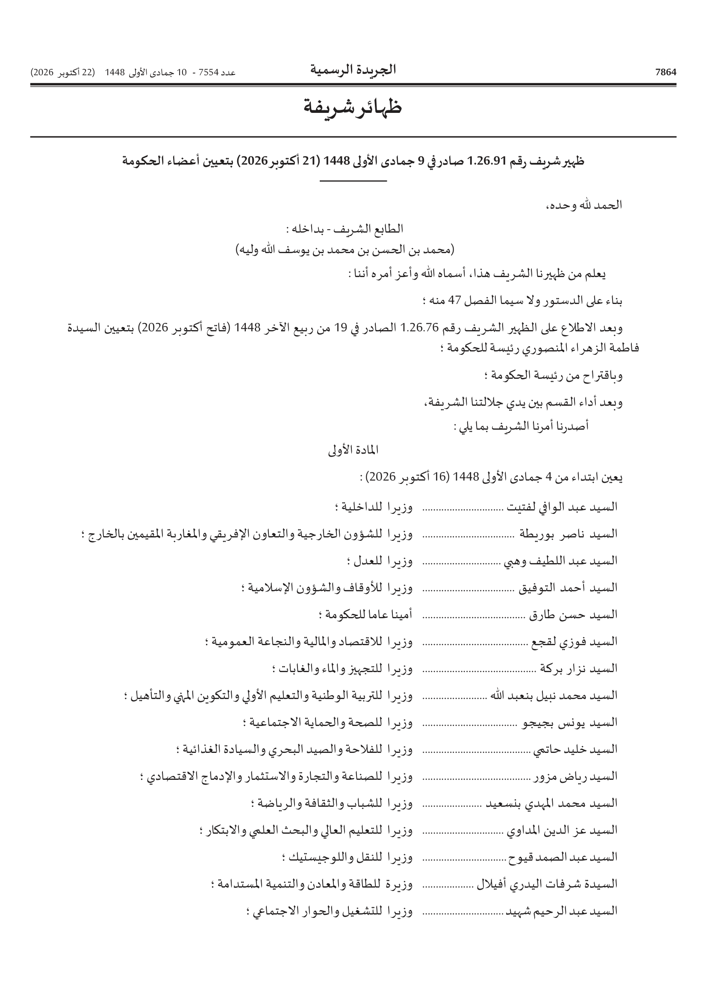
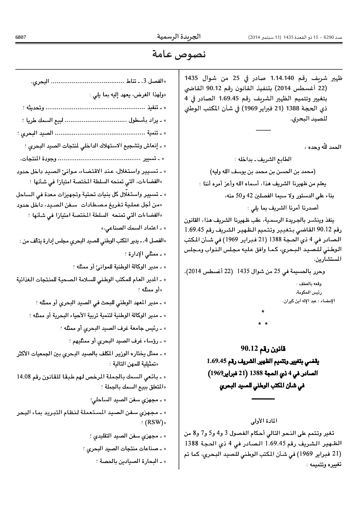
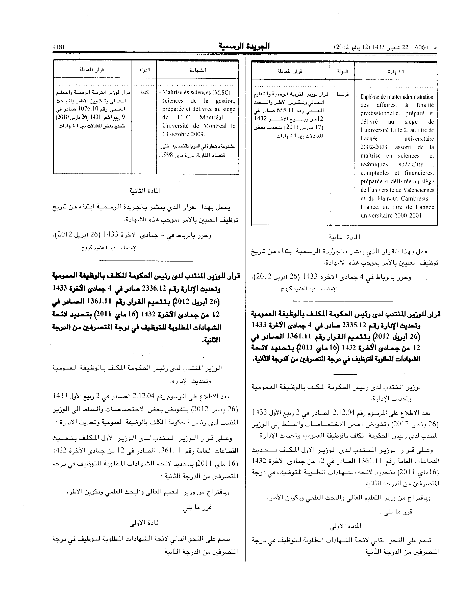

Arabic OCR on 3 Bulletin Officiel pages: dot leaders, «», tables and numbers
Three pages from the job post went through a small Python pipeline: OpenCV finds the layout, a vision model reads each piece, fixed rules clean known mistakes, and a number check flags anything odd instead of guessing.
Status: run on 2026-11-04 on the 3 screenshots from the post (BO 7554, 6290, 6064) with OpenCV for layout and google/gemini-3.8-flash on OpenRouter (temperature 0), then fixed rules and the number check. Scored on a hand-checked test set of 49 lines and cells (48 scored; 1 cell not read). Limits: 3 pages is a tiny test, not a benchmark; on BO 6064 only the two tables were read (11 of 12 cells), the text under them was not read in this run; there is no output from the current OCR here to compare against.
What was checked
| Problem from the post | Result | Where |
|---|---|---|
| Dot-leader lines in the right order (name, then post)Also 5/5 on the « » dot lines of BO 6290. OpenCV finds each run of leader dots and cuts the line there; the part right of the leader is written first. Order comes from position, not from the OCR. | 16/16 | BO 7554 |
| Persian letters left (Farsi yeh, kaf, heh)The raw read before rules had 0 as well; the fixed map (ی → ي, ک → ك, ہ → ه, ۀ → ة, ە → ه) is there as a safety net. | 0 | all 3 pages |
| « » marks kept on the quoted lines"((" or "))" left in the output: 0 (raw read before rules: 0). The rule (( → « and )) → » runs on every line. | 13/13 | BO 6290 |
| Table cells in the right place and read right2 ruled tables found by OpenCV, 3 columns × 2 rows each, every cell cropped and read alone, then rebuilt as an HTML table. "Right" = right row and column and at most 5% character errors. 1 cell was not read in this run. | 11/12 | BO 6064 |
| Numbers exact as printedEvery number in the hand-checked lines and cells, e.g. 1.26.91, 1.14.140, 90.12, 1.69.45, 14.08, 655.11, 2002-2003. Number guard on all 85 numbers the run produced: 0 flagged. | 39/39 | test set |
Error rates 3-page test, hand-checked
| Page | Test items | Character error rate | Exact lines | Raw read before rules |
|---|---|---|---|---|
| BO 7554, p. 7864 | 20 | 0.0% | 20/20 | 0.0% |
| BO 6290, p. 6807 | 17 | 0.3% | 15/17 | 0.3% |
| BO 6064, p. 4181 | 11 (1 cell not read) | 0.4% | 10/11 | 0.4% |
| All 3 pages | 48 | 0.2% | 45/48 |
Test items are lines and table cells typed by hand from the page images (zoomed), then matched to the output. Spaces before punctuation, dash variants and letter stretching (ـ) are ignored; everything else counts. "Raw read before rules" is the same run before the fixed rules; on these pages the model wrote no Persian letters and no "((", so the rules changed nothing that the score sees.
Every remaining error (3)
- BO 6290, p. 6807, 1 char:printed(22 أغسطس 2014) بتنفيذ القانون رقم 90.12 القاضيours(22 أغسطس (2014) بتنفيذ القانون رقم 90.12 القاضي
- BO 6290, p. 6807, 1 char:printedذي الحجة 1388 (21 فبراير 1969) في شأن المكتب الوطنيoursذي الحجة 1388 (21) فبراير 1969) في شأن المكتب الوطني
- BO 6064, p. 4181, 3 chars:printed... - Diplôme de master administration des affaires, à finalité professionnelle, préparé et délivré au siège de l'université Lille 2, au titre de l'année universitaire 2002-2003, assorti de la maîtrise en sciences et techniques, spécialité: comptables et financières, préparée et délivrée au siège de l'université de Valenciennes et du Hainaut Cambresis - France, au titre de l'année universitaire 2000-2001.ours... - Diplôme de master administration des affaires. à finalité professionnelle. préparé et délivré au siège de l'université Lille 2, au titre de l'année universitaire 2002-2003, assorti de la maîtrise en sciences et techniques. spécialité: comptables et financières, préparée et délivrée au siège de l'université de Valenciennes et du Hainaut Cambresis - France, au titre de l'année universitaire 2000-2001.
The French cell of BO 6064 is a poor scan: its commas look like periods. The test set uses commas.
Each page next to our text
The text column shows the reading order the pipeline produced: running header, then the right column, then the left column. Blue …… marks a dot leader.
BO 7554, p. 7864 Cabinet list: 16 lines with dot leaders, one column


Download: bo7554.txt · bo7554.json (text, raw read, boxes, numbers)
BO 6290, p. 6807 Two columns split by a rule; « » amendment lines with dot placeholders


Download: bo6290.txt · bo6290.json (text, raw read, boxes, numbers)
BO 6064, p. 4181 Noisy scan, two columns, ruled tables with French in the cells


الشهادة | الدولة | قرار المعادلة |
|---|---|---|
... - Diplôme de master administration des affaires. à finalité professionnelle. préparé et délivré au siège de l'université Lille 2, au titre de l'année universitaire 2002-2003, assorti de la maîtrise en sciences et techniques. spécialité : comptables et financières, préparée et délivrée au siège de l'université de Valenciennes et du Hainaut Cambresis - France, au titre de l'année universitaire 2000-2001. | ... فرنسا | ... قرار لوزير التربية الوطنية والتعليم العالي وتكوين الأطر والبحث العلمي رقم 655.11 صادر في 12 من ربيع الآخر 1432 (17 مارس 2011) بتحديد بعض المعادلات بين الشهادات |
Not read in this run.
الشهادة | الدولة | قرار المعادلة |
|---|---|---|
... - Maîtrise ès sciences (M.SC) - sciences de la gestion, préparée et délivrée au siège de HEC Montréal – Université de Montréal le 13 octobre 2009. مشفوعة بالإجازة في العلوم الاقتصادية، اختيار اقتصاد المقاولة، دورة ماي 1998. | ... كندا | not read in this run |
Not read in this run.
Download: bo6064.txt · bo6064.json (text, raw read, boxes, numbers)
Number check
Every number in the output is tested against the gazette's own formats (dahir 1.yy.nn, decree 2.yy.nn, law or order nn.yy, article code n-nnn, academic year yyyy-(yyyy+1)) and against a second read of the same crop at 1.5× scale. A number that fails is flagged for a person; it is never rewritten.
Flagged in this run: 0 of 85 numbers. Second reads done: BO 7554, p. 7864: 2 of 2; BO 6290, p. 6807: 4 of 4; BO 6064, p. 4181: 0 of 4 (crops that hold digits).
Formatted numbers found (9)
| Page | Number | Pattern | Check |
|---|---|---|---|
| BO 7554, p. 7864 | 1.26.91 | dahir 1.yy.nn | ok |
| BO 7554, p. 7864 | 1.26.76 | dahir 1.yy.nn | ok |
| BO 6290, p. 6807 | 1.14.140 | dahir 1.yy.nn | ok |
| BO 6290, p. 6807 | 90.12 | law / order nn.yy | ok |
| BO 6290, p. 6807 | 1.69.45 | dahir 1.yy.nn | ok |
| BO 6290, p. 6807 | 14.08 | law / order nn.yy | ok |
| BO 6064, p. 4181 | 2002-2003 | year range yyyy-yyyy | ok |
| BO 6064, p. 4181 | 2000-2001 | year range yyyy-yyyy | ok |
| BO 6064, p. 4181 | 655.11 | law / order nn.yy | ok |
430-1 and 1-430 both fit the article pattern, so a swap there is caught only when the two reads disagree.
The fixed rules on typed strings
These inputs are typed here to show the rules (the model made none of these mistakes on the 3 pages). Only the listed code points are touched.
| Input | After rules / number check |
|---|---|
| فی شأن | في شأن |
| وزیر الداخلیة | وزير الداخلية |
| ک | ك |
| ((الفصل 3. - تناط)) | «الفصل 3. - تناط» |
| السيد نزار بركة ............ وزيرا للتجهيز | السيد نزار بركة ... وزيرا للتجهيز |
| 1-430 | article code n-nnn: ok, kept as printed |
| 2003-2002 | year range yyyy-yyyy: year range not y-(y+1): possibly reversed |
| 2.12.04 | decree 2.yy.nn: ok, kept as printed |
| 12345 | no pattern: no known gazette pattern |
How it works
- Layout (OpenCV): cut the running header at the masthead rule, find the vertical column rule (right column first), find ruled tables by their lines and crop each cell, split text into lines by position, and find dot-leader runs inside a line.
- Read: each crop goes to the vision model with a word-for-word prompt (no corrections, leaders as "...", numbers exactly as printed). Lines with a leader are cut at the leader and both halves read on their own.
- Fixed rules: ی → ي, ک → ك, ہ → ه, ۀ → ة, ە → ه; (( → «, )) → »; leader runs → one marker; leader halves joined right part first.
- Number check: pattern test plus a second read; flags only.
Downloads
bo7554.txt · bo7554.json · bo6290.txt · bo6290.json · bo6064.txt · bo6064.json · test-set.json (hand-checked lines, our output, edits)
The page images are the screenshots attached to the job post (public Bulletin Officiel pages). Model: google/gemini-3.8-flash. Every figure on this page comes from the run files linked above.